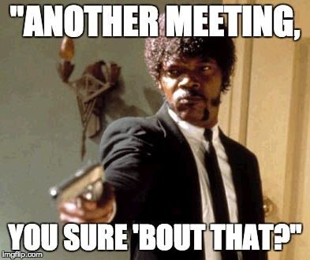
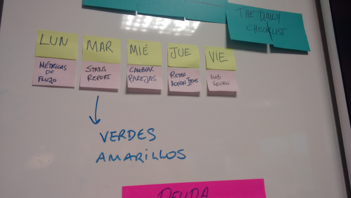

A palavra reunião geralmente causa arrepios em algumas pessoas. Buscar otimizá-las e garantir que sejam efetivas é uma tarefa nobre. Com isso em mente, quero compartilhar uma prática bem interessante que vi funcionando em algumas equipes* e venho aplicando com êxito no time do qual faço parte. Chamei de "The Daily Checklist"**.
Uma das cerimônias que mais gosto no cardápio das metodologias ágeis é a reunião diária (também conhecida como Daily, Standup, Reunião de Pé, etc). Inclusive, por um tempo, era a cerimônia que eu dizia não abrir mão. Hoje já penso diferente, mas esse assunto fica para outro post qualquer dia desses.
O que eu quero compartilhar aqui não é exatamente explicar o que é uma standup, ou que não é. Há bastante conteúdo sobre o assunto. Um muito bom por sinal está aqui, recomendo fortemente a leitura!
Mas então, do que se trata este post?
The Daily Checklist®
A ideia é simples: utilizar o fim da reunião diária, algo entre 3 a 5 minutos, para discutir temas rápidos e recorrentes da equipe, como revisar riscos, compartilhar métricas ou preparar um status report com o time. São pontos que geralmente demandariam uma reunião dedicada, que seja de 30 minutos, mas poderia gerar um esforço desnecessário. Pensa aí em agendar uma sala de reunião, tirar o time da mesa, ir para a sala (ah, só vou buscar um café ali em Marte e já chego lá) e aí já acabou o dia.
É legal ter os temas de alguma maneira pré-definidos, para também não perder muito tempo pensando no que vai ser discutido. Na prática, o que temos é um calendário em um quadro, de preferência no mesmo lugar onde a reunião diária acontece, com os temas que o time gostaria de falar em cada dia da semana.
 Board com a 'agenda' da reunião diária
Aí não estamos perdendo o propósito da reunião diária?
Assim como em qualquer reunião, é importante garantir que o foco não se perca, que a reunião não se extenda demasiado e que continue efetiva. O importante é experimentar, validar se é útil e se faz sentido para o contexto do time.
--
*Agradecimento especial ao time Bravo Alfa ;)
** Nome criado aleatoriamente por mim.